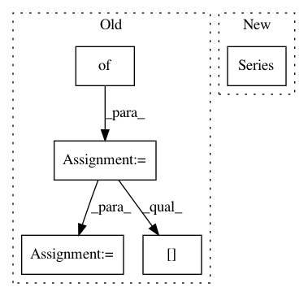

d04b0d52e8789d32d71c099e904a0617756884ac,dlpy/metrics.py,,accuracy_score,#Any#Any#Any#Any#Any#,29
Before Change
while matched_colname in castable.columns:
matched_colname = random_name(name="matched_")
castbl_params = {}
castbl_params["computedvars"] = [{"name":matched_colname}]
code = "if {0}={1} then {2}=1;else {2}=0".format(y_true, y_pred, matched_colname)
castbl_params["computedvarsprogram"] = code
castable = conn.CASTable(castable.name, **castbl_params)
if normalize:
score = castable[matched_colname].mean()
else:
After Change
// total number of observations
obs_per_class = conf_mat.sum()
tot_obs = sum(obs_per_class)
correct_pred_class = pd.Series(np.diag(conf_mat), index=[conf_mat.index, conf_mat.columns])
tot_correct_pred_obs = sum(correct_pred_class)
if normalize:
score = tot_correct_pred_obs/tot_obs
In pattern: SUPERPATTERN
Frequency: 3
Non-data size: 5
Instances
Project Name: sassoftware/python-dlpy
Commit Name: d04b0d52e8789d32d71c099e904a0617756884ac
Time: 2019-09-17
Author: Xiangqian.Hu@SAS.COM
File Name: dlpy/metrics.py
Class Name:
Method Name: accuracy_score
Project Name: nilmtk/nilmtk
Commit Name: b523b464d8cafe29e352981c1c6df941f205592a
Time: 2014-07-09
Author: jack-list@xlk.org.uk
File Name: nilmtk/metrics.py
Class Name:
Method Name: mean_normalized_error_power
Project Name: scikit-learn-contrib/categorical-encoding
Commit Name: 374ca541aaf62aba88a144acbbc7398ca3e995ef
Time: 2018-11-26
Author: jcastaldo08@gmail.com
File Name: category_encoders/ordinal.py
Class Name: OrdinalEncoder
Method Name: ordinal_encoding